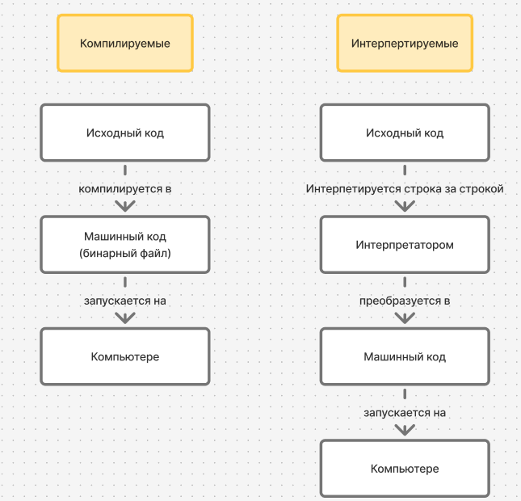

Занятие 2. Запуск кода и переменные
Повторение домашнего задания
Чем отличается IDLE от IDE?
Почему IDLE выводит без print?
Чем отличается синтаксическая ошибка от ошибки времени выполнения?
Где синтаксическая ошибка, а где времени выполнения?
Что такое переменные?
Отличается ли результат выполнения этого кода?
Зачем нужны переменные?
Как надо называть переменные?
Какие имена переменных правильные?
number_of_students
s
19s
переменная
word1
NumberOfStudents
functionResult
__n_executions
n_usage
_apples
Что такое pep8?
В чем разница вывода 2-х кусков кода в IDLE?
Зачем нужны комментарии?
Содержание занятия
Питон - язык со строгой динамической типизацией. Что это значит?
Динамическая типизация означает, что у переменных тип определяется во время выполнения. Например это правильный код на питоне:
А вот в C#, где статическая типизация, так сделать нельзя, потому что мы при создании задаем тип и изменение его будет вызывать ошибку:
string variable = "hello world"; // переменная получает тип string(строка)
variable = 10; // Ошибка: нельзя присвоить int(целое число) переменной типа string(строка)
Строгая типизация означает, что если мы попробуем сложить 2 несовместимых типа, то возникнет ошибка. Например, этот код в python выдаст ошибку:
А вот в javascript, где нестрогая типизация,ошибки не будет:
Что же такое переменные?
Переменные - это ссылка на память компьютера, где хранятся значения. Например, при помощи id мы можем узнать, в каком месте памяти хранится значение:
Python сам управляет памятью, поэтому нам не надо об это беспокоиться, просто присваиваем значения переменным, а python сам разберется.
А что же происходит со старым значением в коде выше?
Он будет собран cборщиком мусора(garbage collector). Он следит, чтобы на фрагмент памяти ссылалась хотя бы одна переменная. Если таких переменных нет, память очищается
Низкоуровневые и высокоуровневые языки
Большинство высокоуровневых языков сами следят за памятью, а вот в низкоуровневых программисты все делают сами
Какие форматы вывода существуют в питоне?
- repr - формат с описанием, понятным программисту. Вы уже с ним встречались в IDLE
- str - формат с описанием, понятным не программисту. А с ним в print
Однако есть возможность print выводить в формате repr:
Как компьютер выполняет код?
Языки программирования делятся на 2 типа:
- Интерпретируемые. Интерпретатор выполняет строку за строкой
- Компилируемые. Компилятор преобразует код целиком в машинный код. Дальше машинный код можно запустить на компьютере

Вопрос: python - интерпертируемый или компилируемый язык?